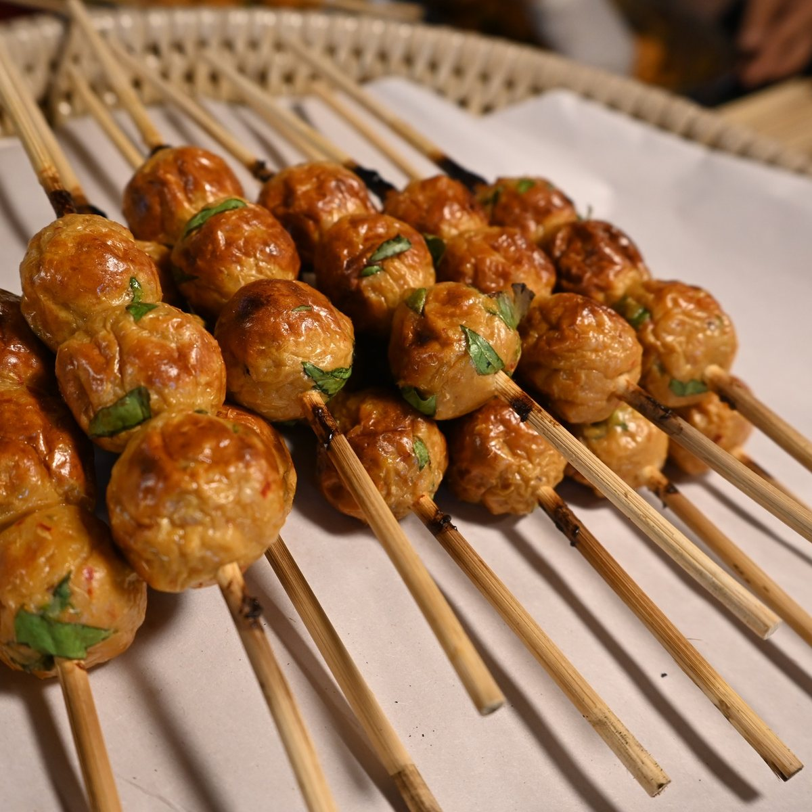
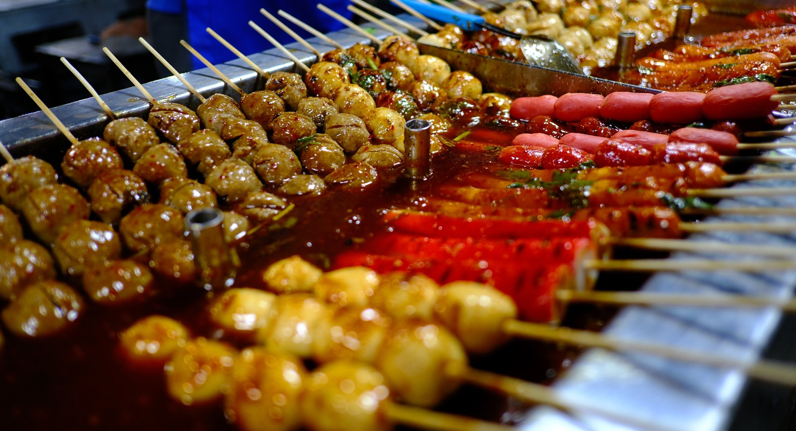
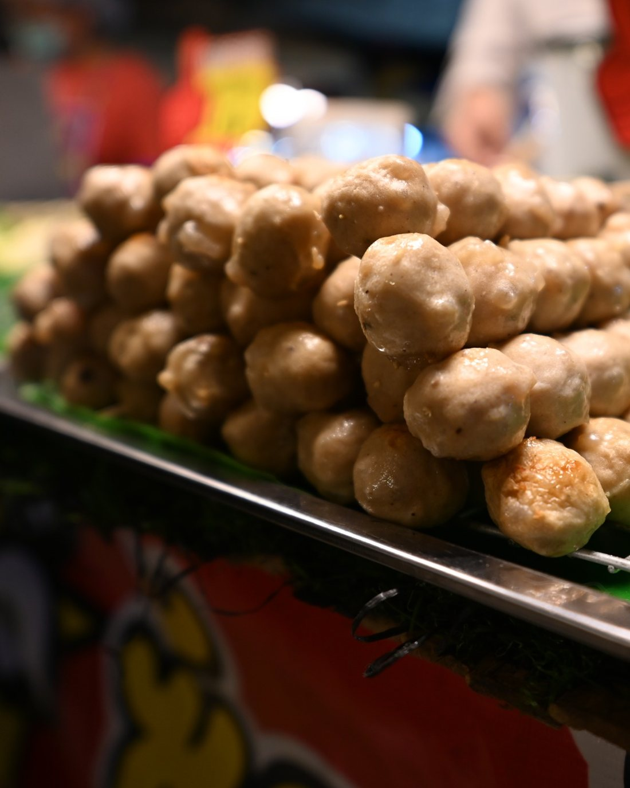
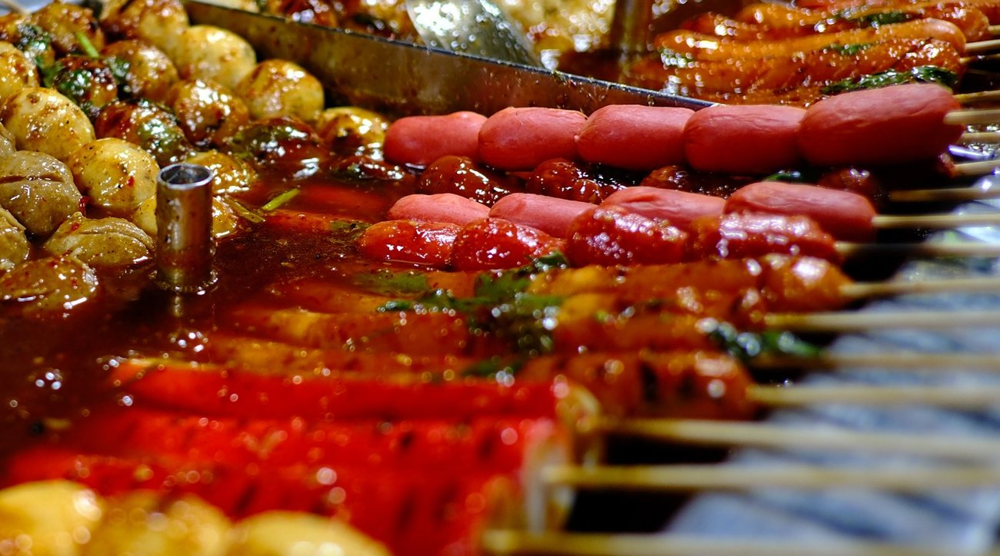
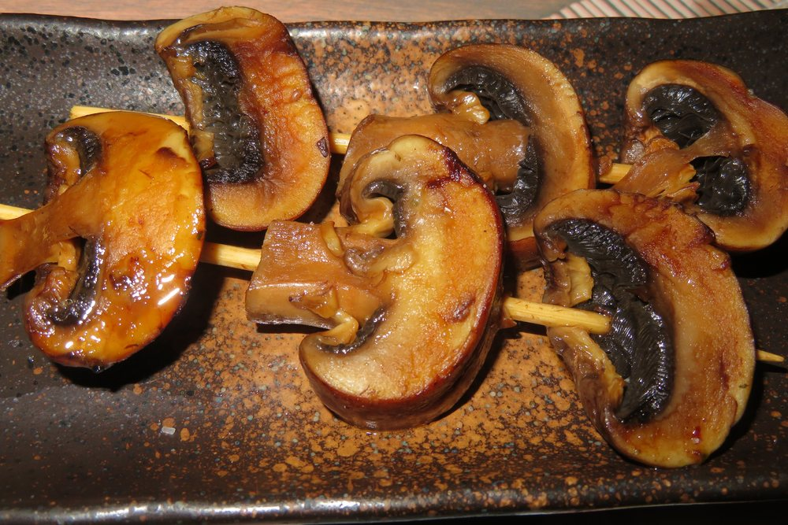
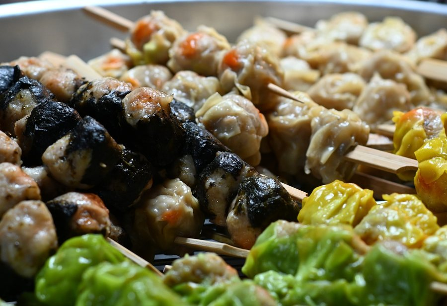
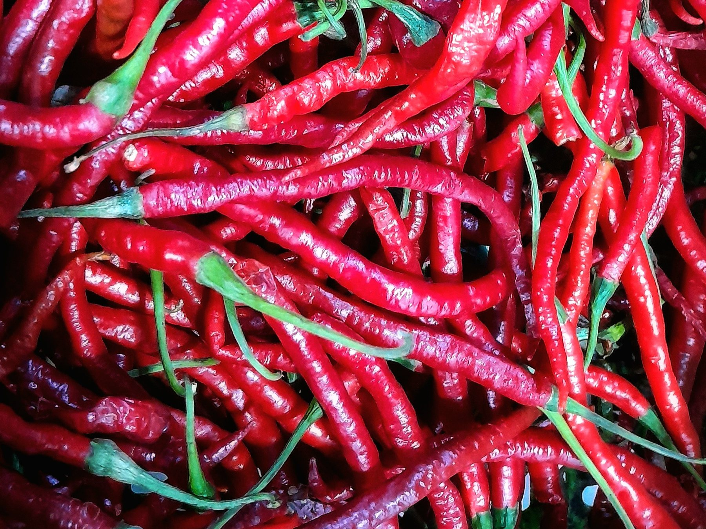

5K
Bakso Bakar
Pedasnya membakar semangat, gurihnya bikin gagal move on!!

Sate bakaran pedas, mulai Rp 5.000 per tusuk
Dibakar sampai beraroma, diolesi sambal pilihanmu, lalu ditaburi katsuobushi dan seledri segar.
Sedap Bara 98 adalah usaha kuliner yang menyajikan variasi sate bakaran (skewers) dengan perpaduan rasa pedas gurih yang kaya rempah.
Banyak sate bakaran rasanya seragam dan pilihan sausnya terbatas. Di sini kamu bebas memilih isian dan sambal sesuai selera.

Sedap berarti rasanya lezat. Bara berarti dibakar sampai keluar aroma khasnya.
Produk Kami
Semua isian Rp 5.000 per tusuk, sudah termasuk sambal atau saus pilihan serta topping.

Pedasnya membakar semangat, gurihnya bikin gagal move on!!

Aroma bakarnya bikin kangen, gurih pedasnya bikin nagih!

Jamur kuping dan kancing, renyah dan menyerap bumbu.

Pilihan cheese atau chicken.
Kamu pilih isian dan sambal yang kamu mau.
Setiap tusuk dibakar hingga matang dan beraroma bakaran.
Skewer diolesi sambal atau saus pilihanmu.
Sentuhan akhir: katsuobushi dan irisan seledri segar.
Menjadi usaha kuliner sate bakaran pedas terbaik yang dikenal luas oleh masyarakat melalui cita rasa khas yang kaya rempah dan kualitas produk yang selalu terjaga, serta mampu berkembang menjadi merek jajanan lokal yang dipercaya, dicintai, dan selalu dirindukan oleh pelanggan.
Menyajikan sate bakaran pedas dengan cita rasa khas yang kaya rempah dan konsisten pada setiap tusuknya, sehingga pelanggan selalu mendapatkan pengalaman rasa yang memuaskan.
Menjaga kualitas dan kebersihan produk pada seluruh tahapan, mulai dari pemilihan bahan baku dari pemasok terpercaya, proses pembakaran, hingga penyajian kepada pelanggan.
Terus berinovasi dalam mengembangkan varian isian, sambal, dan topping sesuai perkembangan selera pasar agar produk selalu menarik dan tidak membosankan.
Memberikan pelayanan yang ramah dan responsif, baik secara langsung di toko offline maupun melalui media sosial, untuk membangun hubungan jangka panjang dengan pelanggan.
Memperluas jangkauan pasar melalui penjualan di toko offline, bazar, dan pasar malam, serta promosi yang konsisten dan menarik di Instagram dan TikTok.
Filosofi Logo
Tim Kami
Mengatur dan mengawasi seluruh kegiatan usaha serta mengambil keputusan strategis.
Mengatur operasional harian dan mengelola keuangan usaha.
Menyiapkan bahan, membuat sambal, membakar, dan menjaga rasa.
Mempromosikan produk, membuat konten, dan menangani pertanyaan konsumen.
